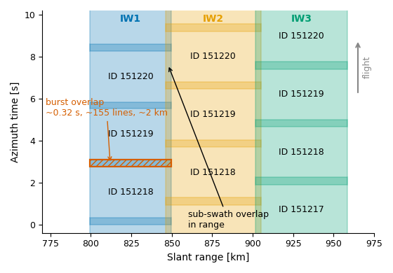
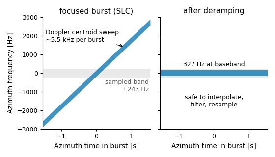

| SAR Concepts: Sentinel-1 TOPS | |
Sentinel-1 IW and EW images are not one continuous strip. They are mosaics of short bursts, and the antenna beam sweeps forward during each burst. That sweep gives every burst a Doppler ramp of several kHz. The ramp is why TOPS data must be deramped before any complex resampling, and why the azimuth coregistration of an interferometric pair must be accurate to about one thousandth of a pixel.
In TOPS (Terrain observation by progressive scans) mode the beam is switched in elevation between sub-swaths: three in IW mode (IW1 to IW3, about 250 km in total) and five in EW mode. The beam dwells on each sub-swath for less than a second (one burst), then switches to the next; the cycle IW1→IW2→IW3 repeats every 2.76 s. Because the beam is also steered in azimuth (below), each focused burst covers about 3 s (about 20 km) of azimuth time. Bursts overlap slightly in azimuth and sub-swaths in range, so there are no gaps (Figure 1). The SLC stores each burst as a separate block of lines, one image per sub-swath and polarisation.

Figure 1. Burst layout of a real Sentinel-1A IW SLC. Hatched: one burst overlap (about 155 lines, 2 km). Labels are relative burst IDs.
Products from IPF 3.40 onwards give each burst a relative burst ID. The ID is tied to the burst's ground position along the track, so it marks the same ground on every pass of the same track (relative orbit) and for every satellite.
During a burst the antenna is steered in azimuth from backward to forward at a constant rate ωs (rad/s). A target at the start of the burst is seen from behind and a target at the end from ahead. After focusing, the Doppler centroid therefore changes linearly with azimuth time η, at the rate
kt = ka ks / (ka − ks), ks = 2 v ωs / λ
where ka is the azimuth FM rate, ks the Doppler rate caused by steering, v the satellite velocity and λ the wavelength. For S-1 IW, kt is about 1.5 to 1.8 kHz/s, so the centroid sweeps about 5 kHz across a burst. Each target's spectrum is about 320 Hz wide and fits within the 486 Hz azimuth sampling rate. Its centre, however, wraps around the sampled band about 11 times along the burst (Figure 2, left).

Figure 2. Azimuth time-frequency support of one IW1 burst. Left: in the SLC the centre frequency follows the Doppler ramp (drawn unfolded); in the sampled data it wraps about 11 times into the 486 Hz band (grey). Right: after deramping and demodulation the whole burst sits at baseband.
Interpolation kernels are low-pass filters centred on zero frequency. On data whose local spectrum sits far from zero they attenuate the signal and distort its phase. Deramping multiplies each burst by the conjugate of its known phase ramp:
sd(η, τ) = s(η, τ) · exp{−j [π kt(τ) (η − ηref(τ))2 + 2π fDC(τ) η]}
where η is the azimuth time within the burst (SNAP counts it from the burst's first line), τ the range time, ηref(τ) a range-dependent reference time and fDC(τ) the range-dependent Doppler centroid at the burst centre. The first term deramps and the second demodulates. The data can then be resampled or filtered like stripmap data. Afterwards the ramp, evaluated at the new sample positions, is put back (reramping).
If the Secondary is misregistered by Δt seconds in azimuth, each pixel picks up a phase error proportional to its Doppler centroid, which gives a phase ramp along each burst. In a burst overlap two bursts see the same ground with centroids Δfovl apart, so their phases differ by
Δφ = 2π · Δfovl · Δt
After debursting this appears as a phase jump at the burst seams. With Δfovl ≈ 4.1 to 4.9 kHz, a misregistration of 0.001 pixel (2 μs, 1.4 cm on the ground) gives about 3°, and 0.01 pixel gives 30 to 36°. Orbit-and-DEM coregistration alone cannot reach this, because of along-track orbit and timing errors.
| S-1 IW (S1A, 2025) | IW1 | IW2 | IW3 |
|---|---|---|---|
| Steering rate ωs [deg/s] | 1.59 | 0.98 | 1.40 |
| Doppler-centroid rate kt [Hz/s] | 1780 | 1500 | 1570 |
| Burst overlap [lines] | 155 | 167 | 173 |
| Δfovl in the overlap [kHz] | 4.9 | 4.1 | 4.3 |
| Δφ for 0.001 pixel [deg] | 3.6 | 3.1 | 3.2 |
Table 1. Values computed from the annotation of one S1A IW SLC (2025-04-03). They change little between products.
TOPS pairs are coregistered in two steps. Back-geocoding maps each Reference pixel to the ground with a DEM and the Reference orbit, then into the Secondary geometry with the Secondary orbit. This removes the effect of topography and leaves a small, nearly constant azimuth offset. Enhanced Spectral Diversity (ESD) measures that offset in the burst overlaps. The phase of the interferogram formed from burst i times the conjugate of the one from burst i+1, both in their common overlap (the double difference), φESD, gives
Δy = faz · φESD / (2π Δfovl)
where Δy is the shift in pixels and faz the azimuth sampling rate. ESD is unambiguous only for |Δy| < faz / (2 Δfovl) ≈ 0.05 pixel, which precise or restituted orbits ensure. Network ESD integrates shifts estimated between many pairs of a time series. The double-difference interferogram over the overlaps is the standard check: after a good correction it is noise around zero.
The classical TOPS InSAR chain, by GPT alias, is TOPSAR-Split →
Apply-Orbit-File → Back-Geocoding →
Enhanced-Spectral-Diversity → Interferogram → TOPSAR-Deburst
→ TOPSAR-Merge.
i_IW1_VV and q_IW1_VV, plus a virtual
Intensity_IW1_VV. TOPSAR-Split keeps one sub-swath and a burst range
(firstBurstIndex/lastBurstIndex, or wktAoi) and does not rename
bands.BISINC_5_POINT_INTERPOLATION, DEM Copernicus 30m Global
DEM) and reramps the Secondary. Bands become e.g. i_IW1_VV_ref_03Apr2025 and
i_IW1_VV_sec1_15Apr2025.ESD Measurement metadata
element (overall, per overlap and per block) and to <swath>_azimuth_shifts.json and
<swath>_range_shifts.json in the SNAP report folder.DDIPhase (radian), and
optionally coherence.i_VV).GSLC-Terrain-Correction geocodes each product to a common map grid with the
phase preserved, deramping included. Interferograms are then formed on that grid.See also Orbits and timing corrections, InSAR fundamentals and Coherence.
Workflows: Sentinel-1 TOPS DInSAR and Stripmap DInSAR.